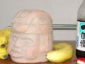
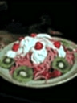
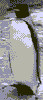

| 名前 宮入 梓 | 担当 ドラむすめ | |||
| 出身地 長野盆地 | 干支 猿 | |||
| 学部 経済 | 今 眠い | |||
| 明日 洗濯 | この頃の懸案 山野のMC | |||
| 一言 | 左ききになりたいです。 | |||
| 名前 吉井 秀俊 | 担当楽器 Ts | |||
| 家で練習すること 逆立ち | 好きなアーティスト ザ・ドリフターズ | |||
| 好きな言葉 すてきに収納 | 好きな宣言 わんぱく宣言 | |||
| 憧れの朝道 ひげ。 | ×大隈 → ○大隅 | |||
| 一言 | シャカリキコロンブス | |||
|  | 名前 樋野 文人 | 担当楽器 Tb | ||
| 好きな遺跡 マチュピチュ | 好きな古墳 前方後方墳 | |||
| 好きな石器 磨製石斧 | 好きな土器 榎林式土器 | |||
| 好きな骨角器 銛先（鹿の角） | 私の宝物 左のヤツ | |||
| 一言 | イッツ オートマーティック♪ | |||
|
| 名前 大隅 牧子。 | 担当 とろんぼーん。 | |||
| 出身校 浜松西高 | 目標 一生日々成長 | ||||
| 好きなこと 楽しいこと。 | 嫌いなこと 寂しいこと。 | ||||
| トロンボーン お友達☆ | ×大隈 → ○大隅 | ||||
| 一言 | Ｔ利には負けません！！（っていうかがんばる。） | ||||

| 名前 中納 知樹 | 担当 Tp、Flh | ||
| 役職 バンマス | 出身 バンコク郊外 | |||
| 得意 ムエタイ | 苦手 セクシーコマンドー | |||
| 夢 地球脱出 | 信頼性 よく壊れます。 | |||
| 一言 | 楽しい？ | |||
 | 名前 中村 翔 | 担当楽器 Ts | ||
| 好きな漫画 北斗の拳、スラムダンク | 好きなシュート ３ポイントシュート | |||
| 好きな選手 クーコッチ（ブルズ時代） | 好きな笑い 漫才 | |||
| 好きな人 Ｈ斗さん （お前はもう死んでいる） | 好きな言葉 Price Less | |||
| 一言 | 安西先生、バスケがしたいです。 | |||
| マイネーム 浅野 晶穂 | マイターム （↑よく考えて下さい） As | |||
| マイホーム ｉｎ西岐阜 | マイルーム ６畳半洋室 | |||
| マイアーム 普通の大根から守口大根に変身させたい。 | マイブーム はしもと’ｓ格言 | |||
| マイチャーム 探してね☆ | マイ業務 看護婦(予定） | |||
| 一言 | Ｌｅｔ ｉｔ ｂｅ！座右の銘です。 | |||
|  | 名前 大竹 加寿子 | 担当 ドラムすめ | ||
| 出身校 松本深志 | ミドルネーム きゃしー | |||
| 星座 乙女座☆ | 好きなパン かれーぱんまん | |||
| 嫌いなパン しょくぱんまん | 興味のないパン あんぱんまん | |||
| 一言 | ちっちゃいです。 | |||
 | 名前 谷本 洋平 | 担当楽器 B | ||
| 好きな血液型 Ｂ | 好きな楽器 ハーモニカ | |||
| 趣味 キン消し集め | 特技 キン消し相撲 | |||
| 得意技 現在はスクリュードライバーかな。 | 好きな髪型 ロン・カーターみたいなの。 | |||
| 一言 | 髪切りました。武藤君と間違えないでね。 | |||
| 名前 水野 清貴 | 担当楽器 G | |||
| 好きな血液型 BとO | 好きな役 リーチのみ（たまにドラ１） | |||
| 出身校 東海高校 | 好きな猫 ミケ（実家で飼ってて、可愛いいんだよね♪） | |||
| 好きな武藤先輩 自転車を直しているとき | 嫌いな武藤先輩 くだらないギャグを言ったとき | |||
| 一言 | 猫にさわりたい。（代わりに武藤さんを…） | |||
| 名前 谷利 晃 | 担当楽器 Tp Fh | |||
| 当時の担当 コンマス | 生年月日 1981.4.18 | |||
| 出身高校 西大和学園高校 | 趣味 みっち～君とのキャッチボール | |||
| 出身地 京都 | 主義 平穏主義 | |||
| 一言 | 体力のいる楽器だ・・・ | |||
|  | 名前 橋本 健太郎 | 担当 Tp、Hp | ||
| 好きな食べ物 土瓶蒸し | 好きなペンギン ヒゲペンギン | |||
| 好きな風 そよ風 | 好きな波 さざ波 | |||
| 好きな楽器 Flh | 趣味 格言作り | |||
| 一言 | 誰かフリューゲルホルン下さい。ゲルフォはどうかと思います。 | |||
|
| 名前 野呂 洋 | 担当 Tp、Flh | ||
| 好きなトランペッター 日野皓正 | 好きなピアニスト リッチーバイラーク | |||
| 欲しいクルマ ＮＳＸ | 欲しいクルマ インテグラタイプＲ | |||
| 好きな数学 確率論、幾何学 | 好きな数学者 リーマン | |||
| 一言 | ジャズと数学の好きな人一緒に語りましょう！！ | |||
|
| 名前 佐久間 信次 | 担当 Bs |
| 一言 | - | |
| 名前 川北 倫弘 | 担当 Pf | |
| 一言 | - | |
|
| 名前 石川 真也 | 担当 Ds |
| 一言 | - | |
戻る | Homeに戻る